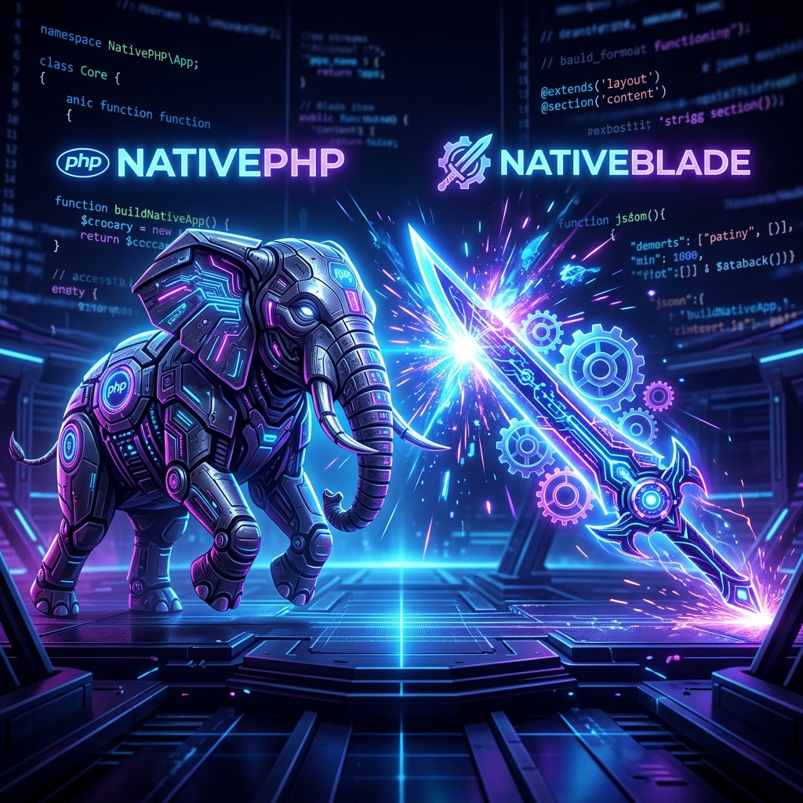

NativePHP vs NativeBlade: The Ultimate Showdown (Deep Architecture Dive)


Explore with AI
Want a quick summary or have specific questions about this post? Use your favorite AI agent.
When it comes to building native desktop and mobile applications with PHP and Laravel, the landscape has completely shifted over the last couple of years. Two frameworks have emerged as the heavyweights in this space: NativePHP and NativeBlade. While they share similar goals, their underlying architectures and philosophies couldn't be more different. Here is the ultimate showdown to help you choose the right tool for your next project.
1. Core Architecture Differences
The most fundamental difference between NativePHP and NativeBlade lies in how they execute PHP code on the client machine. This single difference dictates their performance metrics, file sizes, and capabilities.
| FEATURE | NativePHP | NativeBlade |
|---|---|---|
| Runtime Environment | Real PHP Binary | PHP WebAssembly (WASM) |
| App Shell Wrapper | Electron / Native Webview | Tauri 2 |
| Primary Target Platform | Desktop (Mobile in v3+) | Mobile & Desktop seamlessly |
| Database Support | Standard DBs (MySQL/Postgres/SQLite) | SQLite (persisted to IndexedDB) |
| Updates Mechanism | Standard App Updates | Over-The-Air (OTA) Updates |
NativePHP Architecture
Bundles a full, real PHP executable. It allows for deep, uncompromised integration with the operating system but results in larger application sizes due to embedding actual binaries.
NativeBlade Architecture
Runs PHP through WebAssembly within a Tauri 2 shell. Extremely lightweight, optimized for running the exact same Laravel/Livewire codebase without a traditional server backend.
The Bottom Line
The PHP desktop and mobile ecosystem has never been healthier. Both NativePHP and NativeBlade empower PHP developers to break out of the browser without learning entirely new languages like Swift, Kotlin, or C++.
If you're looking to build professional-grade applications or need expert assistance with complex integrations, you can explore specialized Laravel development services or hire Laravel developers from Acquaint Softtech to accelerate your project.
"The future of PHP is not just on the server. It's in your pocket and on your desktop."